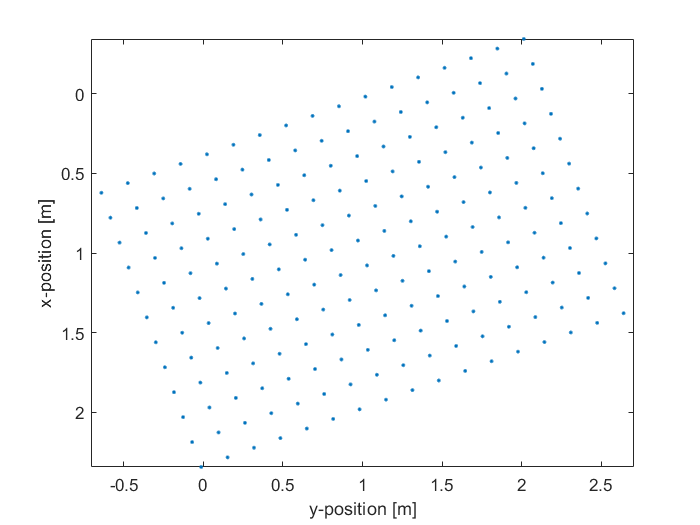

makeCartRect
Create evenly distributed Cartesian points covering a rectangle.
Syntax
rect = makeCartRect(rect_pos, Lx, Ly, theta, num_points)
rect = makeCartRect(rect_pos, Lx, Ly, theta, num_points, plot_rect)
Description
makeCartRect creates an array of the Cartesian coordinates of points evenly distributed over a rectangle. The position of the rectangle is set by rect_pos, and its height and width are specified by Lx and Ly. If rect_pos is given as a 2 element vector, the Cartesian rectangle points are returned in 2D. These points are rotated within the plane if an angle theta is given. If rect_pos is given as a 3 element vector, the Cartesian rectangle points are returned in 3D assuming the rectangle lies in the x-y plane. The orientation of the 3D points can be adjusted by giving theta as a 3 element vector specifying the yaw, pitch, and roll of the rectangle. The 2D plot that is displayed after calling makeCartRect([1, 1], 2, 3, 20, 200, true); is given below.

Inputs
rect_pos |
Cartesian position of the centre of the rectangle given as a two (2D) or three (3D) element vector [m] |
Lx |
Height of the rectangle (along the x-coordinate before rotation) [m] |
Ly |
Width of the rectangle (along the y-coordinate before rotation) [m] |
theta |
Either a scalar (2D) or three element vector (3D) [tx, ty, tz] specifying the orientation of the rectangle [deg]. In 3D, the rotations are specified about x-y'-z'' (intrinsic rotations) or z-y-x (extrinsic rotations). All rotations are counter-clockwise. Can be set to [] if no rotation. |
num_points |
Approximate number of points on the rectangle. This is rounded upwards to ensure the number of points along each side is an integer. |
Optional Inputs
plot_rect |
Boolean controlling whether the Cartesian points are plotted (default = false) |
Outputs
rect |
2 x num_points or 3 x num_points array of Cartesian coordinates (note, num_points is adjusted, as described above) |
See Also
makeDisc,
makeCartBowl